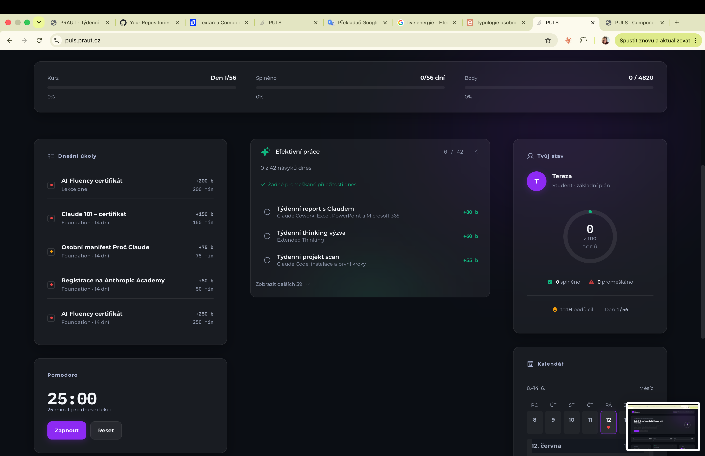

Vyměň zahlcení za strukturu.
Volná hlava staví nejlíp.
Tvoje hlava nepotřebuje opravit, potřebuje uvolnit. Dáme ti technický impuls a proces, který odfiltruje šum. Jasná mysl není cíl. Je to vedlejší produkt toho, že máš funkční systém.
Tvůj problém není kompetence.
Je to přetížená hlava.
Rychlý svět ti hlavu zavalil. Strach z termínů a pocit, že je toho moc, tě brzdí v tom jediném, co se počítá – v tvoření. Ukážeme ti konkrétní mechanismy, jak balast z práce odstranit, ne jak se s ním smířit. Jakmile přestaneš hasit, rozjedeš věci, na kterých záleží.
My dodáme strukturu.
Výstup a energie jsou tvoje.
AI tě nespasí. Ale správně nasazený proces ti rozváže ruce. Naučíš se delegovat zátěž na přesně definované procesy a získáš zpátky to podstatné – analytický odstup, kontrolu nad daty a sebevědomí dotahovat projekty do konce. My jsme jen puls. Hybatel jsi ty.
Odfiltruj šum.
Energii si nech na stavění.
Ten klid, který přijde, je jen prostor pro další stavění. Uvolni hlavu. To, co se v ní rozhoří, je tvoje.
Kde stojíš teď?
Zvol si výchozí bod. Tvoje aktuální workflow určuje, jakým směrem pokračovat.
Foundation
Zatím bez systému. Claude neznám, nebo ho otevírám namátkou a nevím, jak přesně ho zadat.
Power
Chaotické workflow. Claude používám, ale výsledky kolísají. Chybí mi proces a opakovatelnost.
Advanced
Mám strukturu. Umím používat pokročilé prompty a chci začít stavět vlastní nástroje a automatizovat.
Expert
Mířím do produkce. Hledám profesionální řešení, vlastní servery a chci stavět produkty pro ostatní.
Nevíš, jaký je tvůj status? Ozveme se do 24 hodin a tvůj současný proces zmapujeme.
Nech nám kontaktCertifikát, který něco znamená.
Papír za odsezené hodiny nečekej. Certifikát získáš až ve chvíli, kdy prokážeš, že tvůj nově postavený systém reálně funguje. Nejde nám o rozdávání vysvědčení, ale o funkční výstup. Právě proto má náš certifikát skutečný význam. Pro tebe i pro kohokoliv, kdo ho uvidí ve tvém CV.
Od zátěže k čistému workflow.
PULS není jen série hodin. Každý tier má vlastní osu práce, úkoly a výstupy. Planner drží celý proces pohromadě, abys přesně viděla, kde jsi, co stavíš a co už máš za sebou.

Nemluvíš se strojem.
Před startem dostaneš krátký dotazník. Není to test. Potřebujeme znát tvůj kontext, abychom hodiny i příklady uzpůsobili tvojí praxi.
V průběhu tě vede lektor, který tě v živých hodinách reálně vidí. Pozná, kdo na sobě pracuje. A pokud potřebuješ poradit mezi hodinami, máš AI architekta – člověka, který staví s AI denně a ví, kde se můžeš zadrhnout a proč.
„Dostala jsem příležitost v podobě mentora a nástroje. Dneska vytvářím věci, které mě dřív ani nenapadly. A jsem teprve na začátku."
Tu samou možnost teď chceme dát dál.
Pokud máš pochybnosti, ozvi se mi.
– Tereza, zakladatelka · tereza.svanda@praut.cz
Stojíme za výsledkem.
Náš slib nestojí na pocitech. Pokud projdeš procesem a nedosáhneš na slíbený výstup, garantujeme vrácení peněz.
Pokud kupuješ pro tým.
Dostaneš přesná data. Po každém tieru jasně uvidíš, jak je na tom každý z týmu, kdo proces reálně nasadil a co z toho má. Tvoje investice se neztratí v dobrých úmyslech.
Vše nastavíme dle dohody: počet lidí, fakturaci i harmonogram. Stačí napsat.
Tohle není pro každého.
Tenhle proces se nemusí hodit zrovna teď. Jestli potřebuješ ověřit, zda ti PULS reálně uvolní ruce, napiš nám. Žádný test, žádný tlak. Jen zmapujeme, kde stojíš.